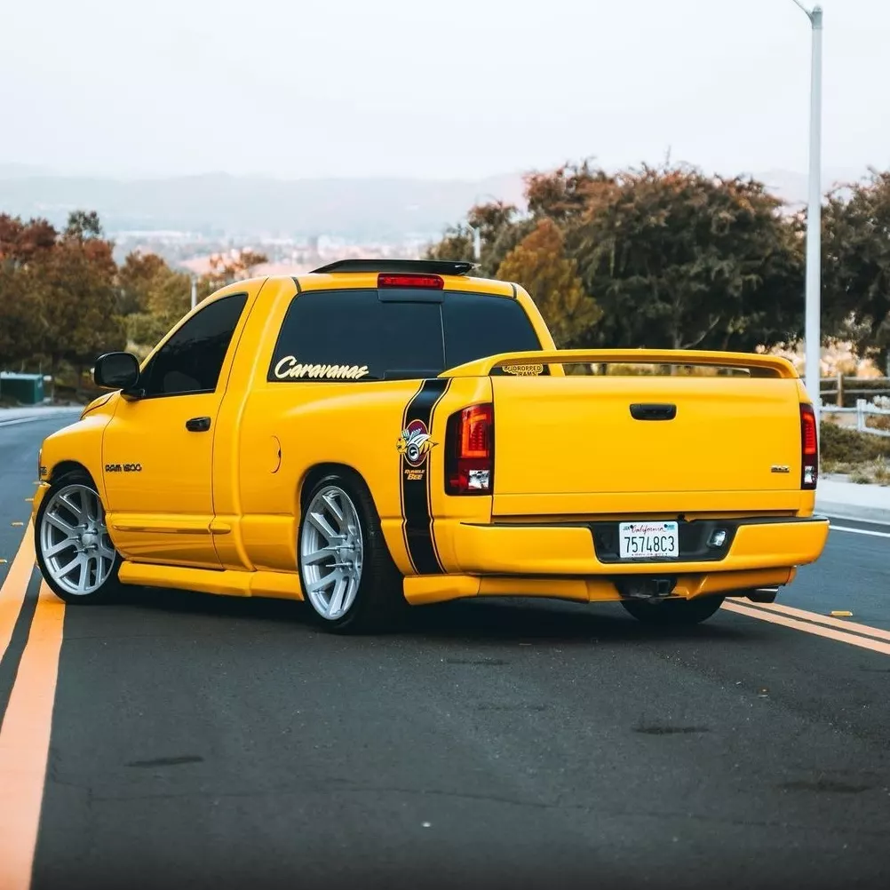
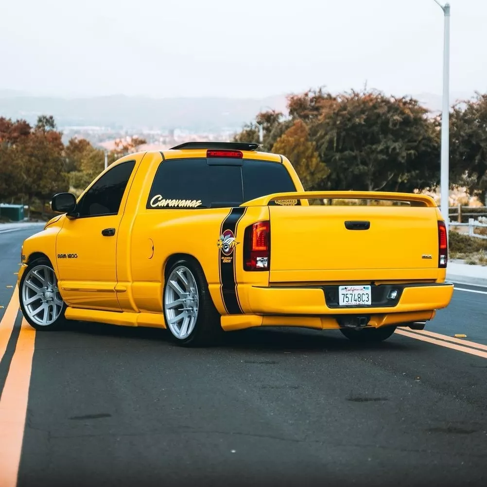

Velocidad máxima: ?
0-100 km/h: ?
Potencia máxima: ?
Longitud: 5,27m
Anchura: 2,01m
Altura: 1,94m
Batalla: 3,06m
Peso: ?
La Dodge Ram 1500 ofrecía, como opciones, motores V6 de 2,7 litros, V8 de 4,7 y 5,7 litros y V10 de
8,3 litros.
Cuenta con suspensión delantera independiente con resortes de torsión y barra estabilizadora. La suspensión
trasera es un sistema de viga trasera con ballestas. La potencia de frenado proviene de los frenos de disco ventilados
en las cuatro ruedas y un antibloqueo del sistema de frenado, también en las cuatro ruedas. Las opciones de transmisión
son: manual de seis velocidades o automática de cinco velocidades.
Además, viene con tomas de corriente de 12 voltios, aire acondicionado, protección anti-robo, cuatro parlantes,
reloj, brújula, tacómetro, control de crucero y pedales ajustables en altura.